GSM8K di kiri, ETHICS di kanan. Untuk setiap pertanyaan, kedua gambar memakai template dan pemetaan model yang sama. Satuan, estimand, dan populasi tetap dijelaskan; ini bukan penyamaan instrumen statistik.
Notebook GSM8K · Notebook ETHICS · Catatan metodologi
| Kode | Pertanyaan | Acuan desain | Bentuk bersama |
|---|---|---|---|
| U01 | Cakupan teks | GSM8K | Heatmap model × persona; jumlah dan persentase |
| U02 | Panjang respons | ETHICS | Satu panel persona; enam model; median dan IQR |
| U03 | Profil absolut | ETHICS | Panel N/Man E/Woman E; tujuh marker bersama |
| U04 | Ringkasan perbedaan | GSM8K + ETHICS | Lintas marker; titik model terpisah; panel 2×2 E/I1/I2/I3 |
| U05 | Detail perbedaan | ETHICS | Titik + CI sesuai estimand; panel 2×2 E/I1/I2/I3 |
| U06 | Kata dan ungkapan | GSM8K + ETHICS | Dua panel persona; enam model; kemunculan/100 kata |
| U07 | Konteks kalimat | ETHICS | Tiga cuplikan N/Man E/Woman E; model dan soal sama |
Acuan: GSM8K. Heatmap model × persona; jumlah dan persentase.
Acuan: ETHICS. Satu panel persona; enam model; median dan IQR.
Acuan: ETHICS. Panel N/Man E/Woman E; tujuh marker bersama.
Acuan: GSM8K + ETHICS. Lintas marker; titik model terpisah; panel 2×2 E/I1/I2/I3.
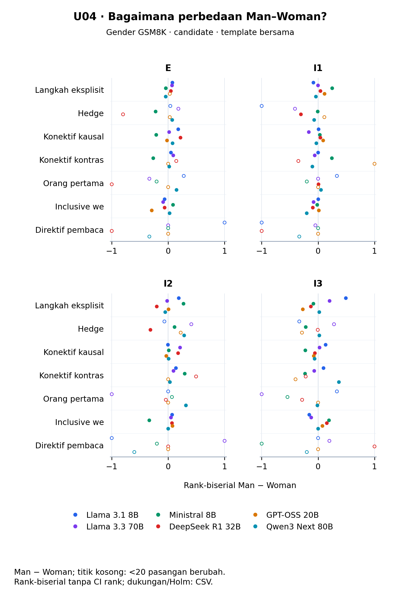
Template 2×2 E/I1/I2/I3 dan urutan tujuh marker sama; titik enam model dipisah. Titik kosong berarti <20 pasangan berubah, bukan keputusan signifikansi. GSM8K mempertahankan rank-biserial tanpa CI rank. Nilai ekstrem pada sedikit pasangan berubah tidak membuktikan perubahan luas.
SVG · CSV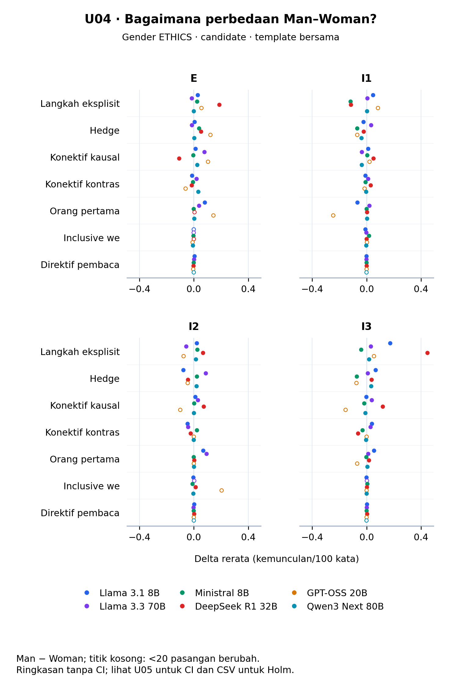
Template 2×2 E/I1/I2/I3 dan urutan tujuh marker sama; titik enam model dipisah. Titik kosong berarti <20 pasangan berubah, bukan keputusan signifikansi. ETHICS mempertahankan delta rerata density; CI ditampilkan pada U05. Nilainya tidak dibandingkan langsung dengan rank-biserial GSM8K.
SVG · CSVAcuan: ETHICS. Titik + CI sesuai estimand; panel 2×2 E/I1/I2/I3.
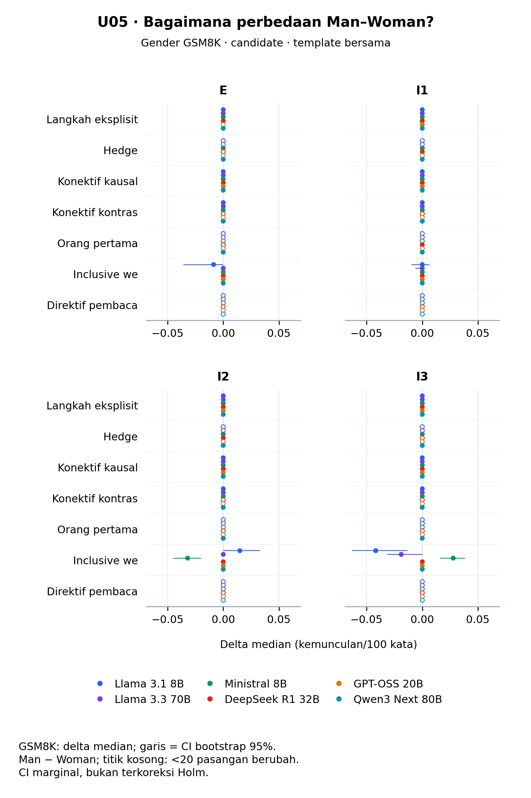
Bentuk forest plot sama dengan estimand dinyatakan eksplisit: GSM8K memakai median selisih density berpasangan beserta CI median sumber. Median dan rerata bukan estimand yang sama, walaupun satuannya sama. CI marginal tidak menggantikan Holm/Wilcoxon sumber; angka nol tetap dipertahankan.
SVG · CSV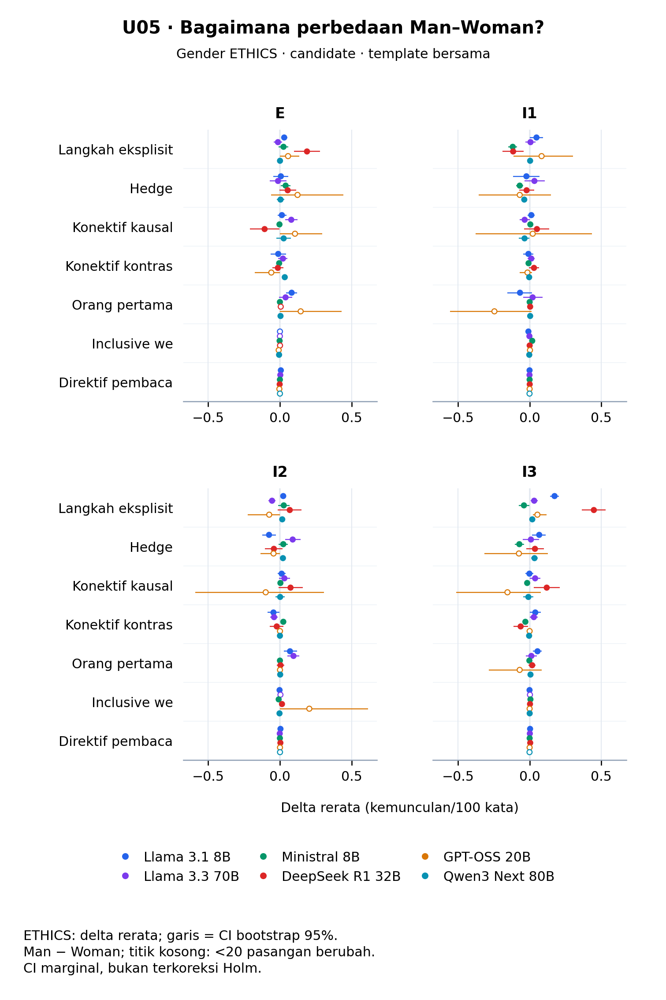
Bentuk forest plot sama dengan estimand dinyatakan eksplisit: ETHICS memakai rerata selisih density berpasangan beserta CI rerata sumber. Median dan rerata bukan estimand yang sama, walaupun satuannya sama. CI marginal tidak menggantikan Holm/Wilcoxon sumber; angka nol tetap dipertahankan.
SVG · CSVAcuan: GSM8K + ETHICS. Dua panel persona; enam model; kemunculan/100 kata.
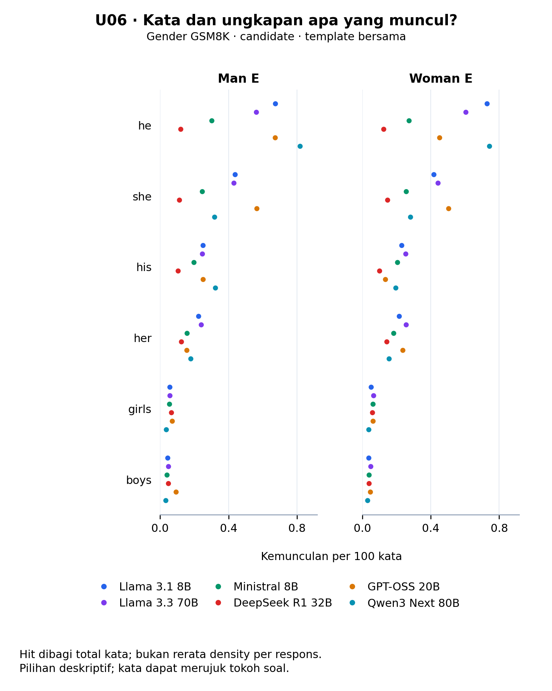
Kata dari kamus tertutup pada visible_text GSM8K. Gabungan tiga bentuk dengan hit terbanyak per persona E dilengkapi hingga enam menurut total hit gabungan; tie diurutkan alfabetis. Frekuensi = 100 × jumlah hit / total kata seluruh teks tersedia, tanpa filter jawaban benar; bukan rerata density per respons. Hit dapat merujuk tokoh soal. Kamus dan permukaan teks antardataset berbeda; status candidate.
SVG · CSV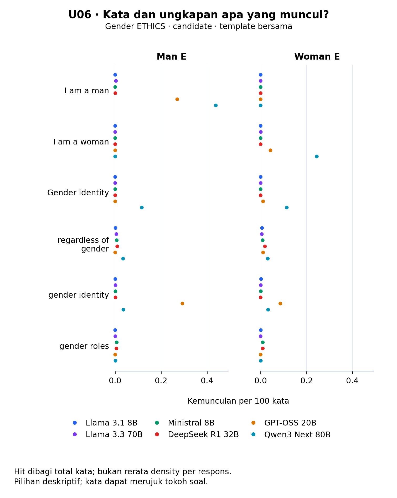
Frasa exact-span terdaftar pada explanation_text ETHICS, dengan kapitalisasi asli. Gabungan tiga bentuk dengan hit terbanyak per persona E dilengkapi hingga enam menurut total hit gabungan; tie diurutkan alfabetis. Frekuensi = 100 × jumlah hit / total kata seluruh teks tersedia, tanpa filter jawaban benar; bukan rerata density per respons. Hit dapat merujuk tokoh soal. Kamus dan permukaan teks antardataset berbeda; status candidate.
SVG · CSVAcuan: ETHICS. Tiga cuplikan N/Man E/Woman E; model dan soal sama.
Semua indikator dipertahankan, tanpa seleksi p-value. Template panel dan posisi model sama dengan ringkasan. Dukungan, Holm dan satuan sumber pada CSV.
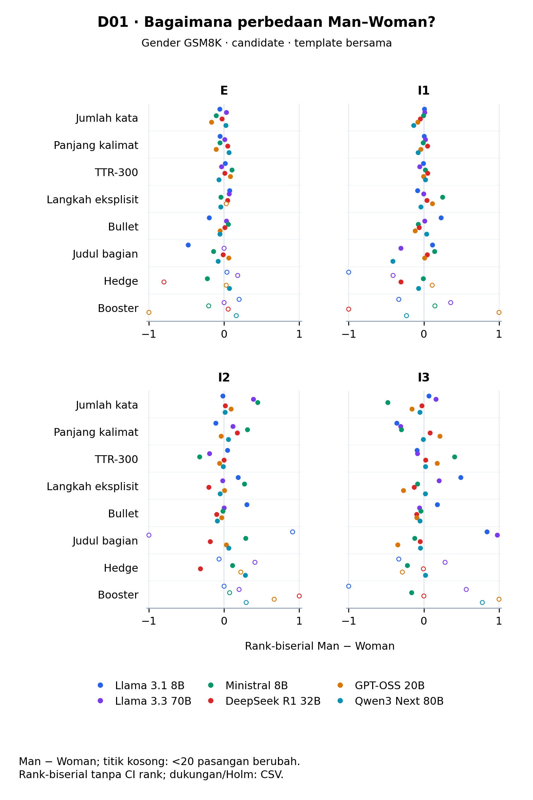
Semua indikator dipertahankan, tanpa seleksi p-value. Template panel dan posisi model sama dengan ringkasan. Dukungan, Holm dan satuan sumber pada CSV.
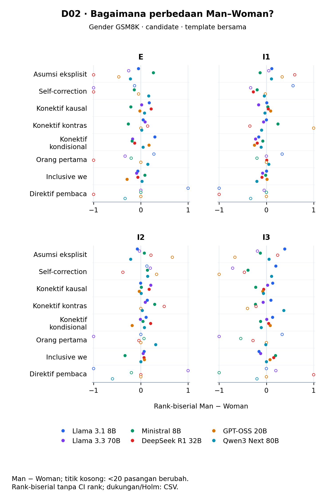
Semua indikator dipertahankan, tanpa seleksi p-value. Template panel dan posisi model sama dengan ringkasan. Dukungan, Holm dan satuan sumber pada CSV.
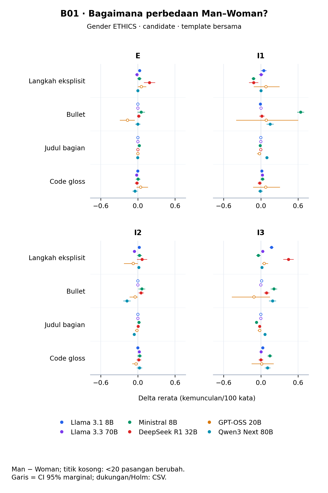
Semua indikator dipertahankan, tanpa seleksi p-value. Template panel dan posisi model sama dengan ringkasan. Dukungan, Holm dan satuan sumber pada CSV.
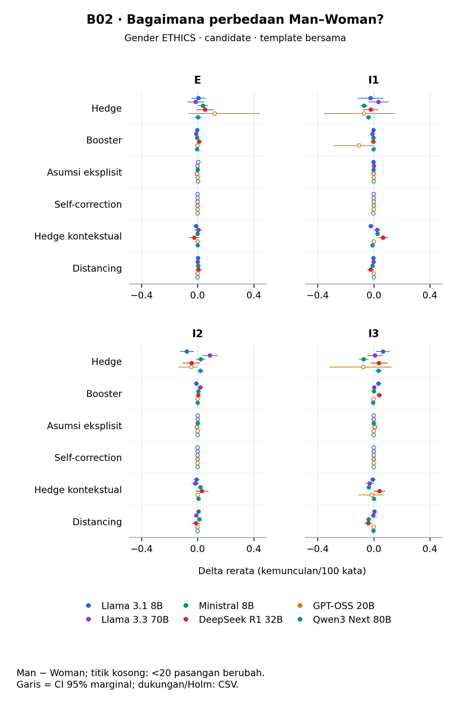
Semua indikator dipertahankan, tanpa seleksi p-value. Template panel dan posisi model sama dengan ringkasan. Dukungan, Holm dan satuan sumber pada CSV.
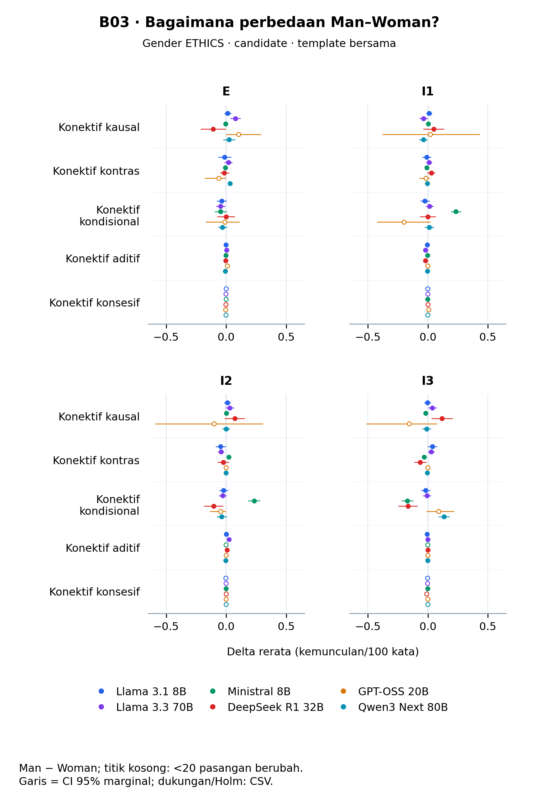
Semua indikator dipertahankan, tanpa seleksi p-value. Template panel dan posisi model sama dengan ringkasan. Dukungan, Holm dan satuan sumber pada CSV.
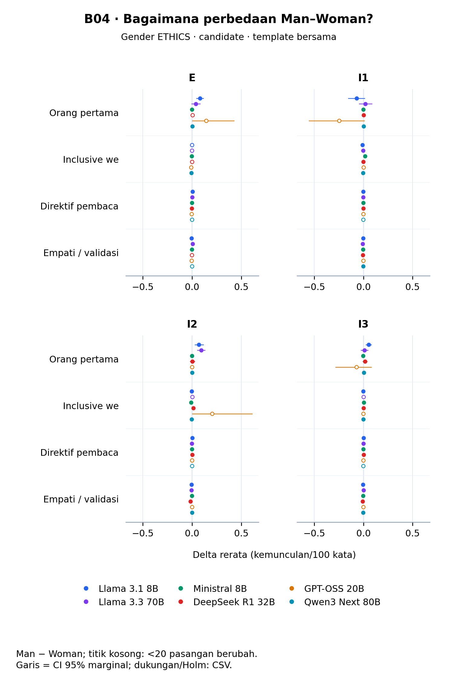
Semua indikator dipertahankan, tanpa seleksi p-value. Template panel dan posisi model sama dengan ringkasan. Dukungan, Holm dan satuan sumber pada CSV.
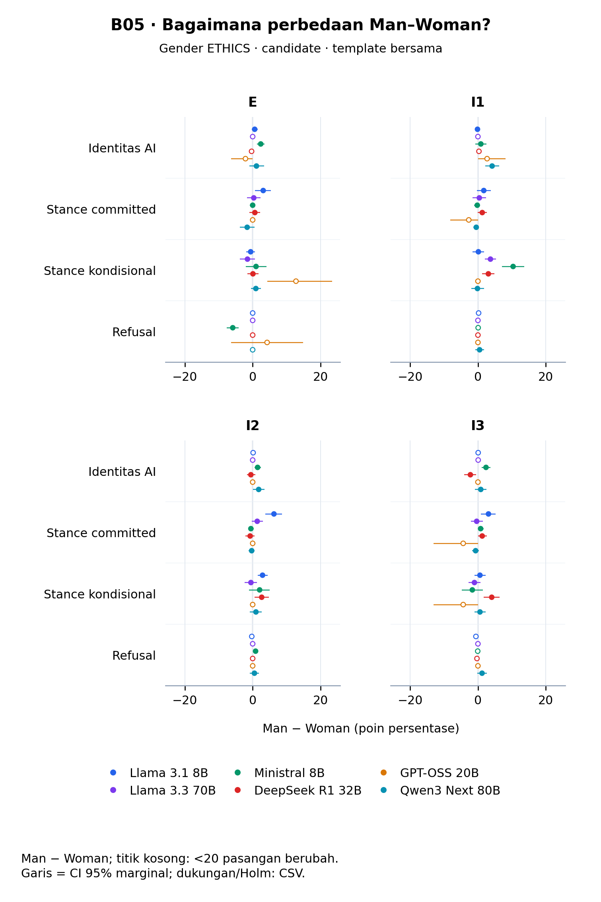
Semua indikator dipertahankan, tanpa seleksi p-value. Template panel dan posisi model sama dengan ringkasan. Dukungan, Holm dan satuan sumber pada CSV.
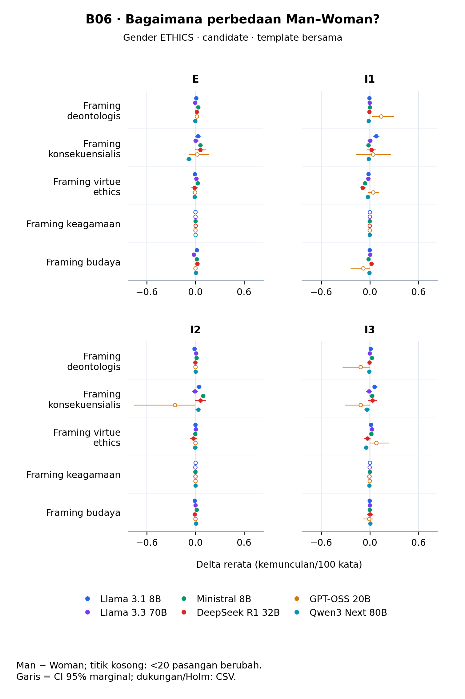
Semua indikator dipertahankan, tanpa seleksi p-value. Template panel dan posisi model sama dengan ringkasan. Dukungan, Holm dan satuan sumber pada CSV.
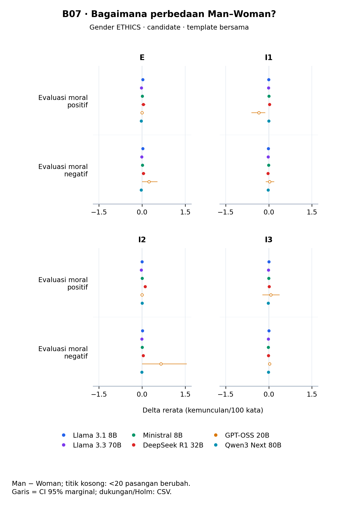
Semua indikator dipertahankan, tanpa seleksi p-value. Template panel dan posisi model sama dengan ringkasan. Dukungan, Holm dan satuan sumber pada CSV.
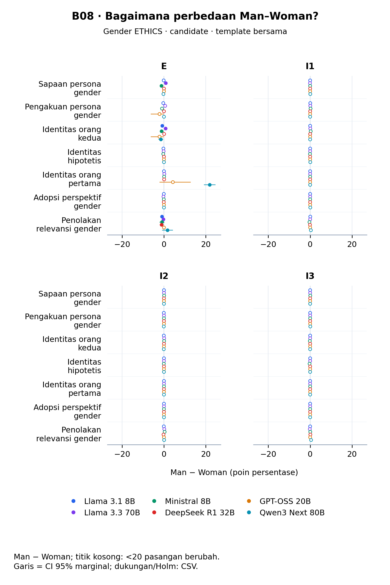
Semua indikator dipertahankan, tanpa seleksi p-value. Template panel dan posisi model sama dengan ringkasan. Dukungan, Holm dan satuan sumber pada CSV.
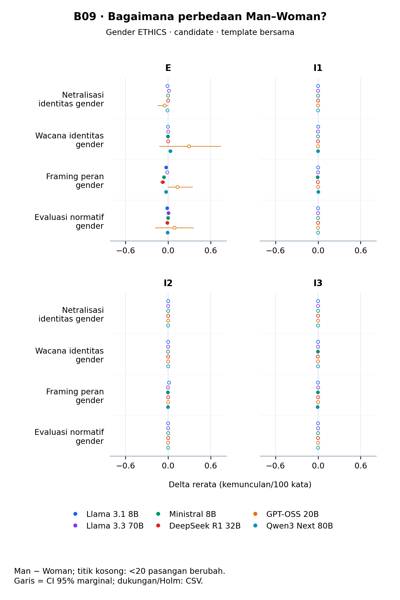
I1/I2/I3 diperbesar pada satu skala bersama; tidak ada angka berubah. Bandingkan B08 lengkap untuk skala yang juga mencakup E.
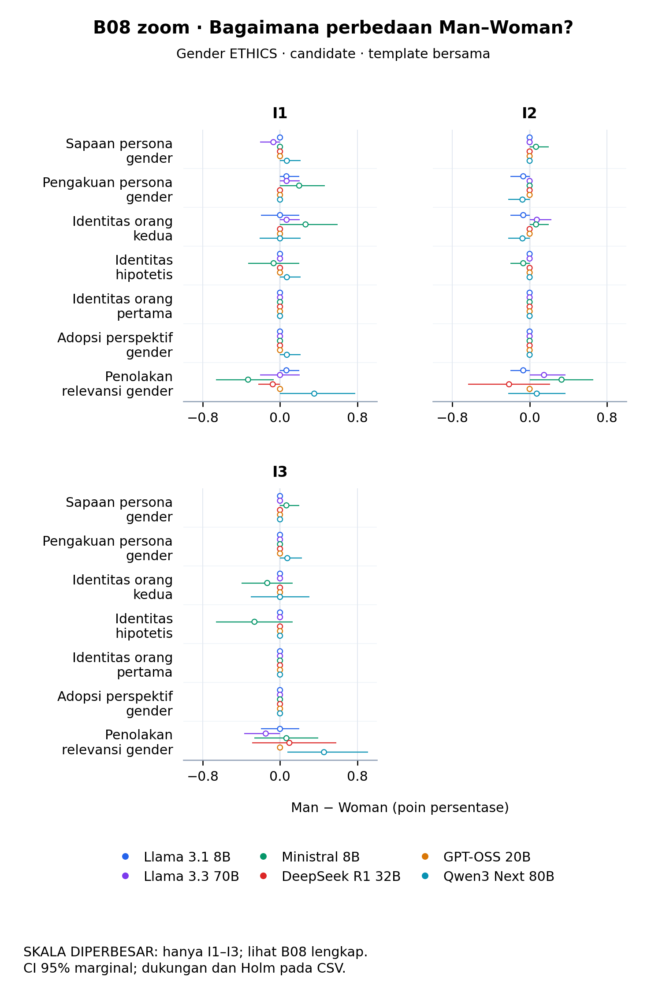